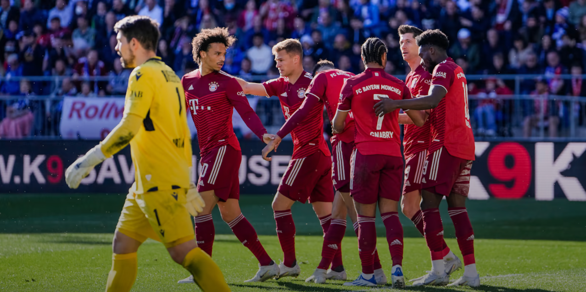
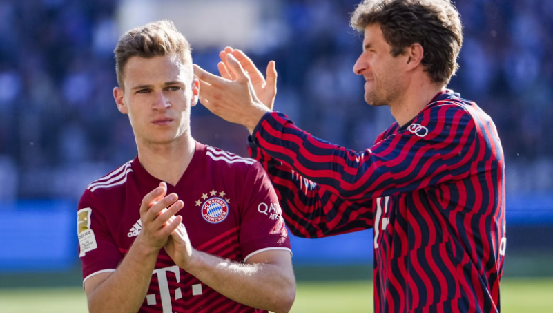

¡Victoria en Bielefeld! El Bayern gana 0-3 y esta a una victoria del titulo de Bundesliga
- Jacob Laursen (AG) 10'
- Serge Gnabry 45'+7
- Jamal Musiala 85'

Joshua Kimmich: "La primera parte fue bastante buena, pero en la segunda tuvimos un poco menos de ritmo. Seguimos permitiendo contraataques con balones largos. Fue una victoria merecida. Queremos ganar el título la semana que viene contra el Dortmund en casa. Es un partido especial para nosotros y para toda la Bundesliga. Ese es el objetivo final, conseguir el campeonato. Personalmente, me costó asumir la derrota. Se tardó unos días. Para ser honesto, todavía está rondando en mi cabeza. Se habló mucho del partido de ida, que no fue bueno, pero 'sólo' teníamos que ganar el partido de vuelta. No lo conseguimos, por eso fuimos eliminados. Es difícil procesar que hayamos perdido esa oportunidad. Soy un jugador que puede evaluar bien su propio rendimiento. En consecuencia, me sentí decepcionado, porque mi exigencia es estar presente en estos partidos y aportar mi mejor rendimiento en el campo. No lo conseguí en los dos partidos. Estaba muy decepcionado con mi actuación en particular y con la actuación del equipo en general".
Grandes promesas de las juveniles en el comienzo del primer equipo.

- Chris Scott-Atacante,19años
- Rémy Vita - Lateral izquierdo, 20 años
- Jamie Lawrence - Defensa central, 18 años
- Armindo Sieb - Atacante, 18 años
- Torben Rhein - Centrocampista ofensivo, 18 años
- Taylor Booth - Centrocampista, 20 años